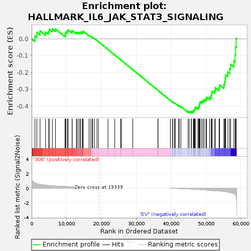

| | | Dataset | 306_EV_express.306_EV.cls#306_versus_EV |
| Phenotype | 306_EV.cls#306_versus_EV |
| Upregulated in class | EV |
| GeneSet | HALLMARK_IL6_JAK_STAT3_SIGNALING |
| Enrichment Score (ES) | -0.44367042 |
| Normalized Enrichment Score (NES) | -1.3041846 |
| Nominal p-value | 0.035906643 |
| FDR q-value | 0.4032288 |
| FWER p-Value | 0.615 |
Table: GSEA Results Summary

Fig 1: Enrichment plot: HALLMARK_IL6_JAK_STAT3_SIGNALING
Profile of the Running ES Score & Positions of GeneSet Members on the Rank Ordered List
| SYMBOL | TITLE | RANK IN GENE LIST | RANK METRIC SCORE | RUNNING ES | CORE ENRICHMENT | | 1 | A2M | NNN | 959 | 0.687 | 0.0180 | No |
| 2 | TLR2 | NNN | 1492 | 0.611 | 0.0395 | No |
| 3 | PIM1 | NNN | 2420 | 0.489 | 0.0481 | No |
| 4 | EBI3 | NNN | 4003 | 0.404 | 0.0414 | No |
| 5 | CNTFR | NNN | 4828 | 0.352 | 0.0450 | No |
| 6 | IL1B | NNN | 5129 | 0.345 | 0.0571 | No |
| 7 | CSF2RB | NNN | 5939 | 0.328 | 0.0597 | No |
| 8 | INHBE | NNN | 6827 | 0.285 | 0.0589 | No |
| 9 | IL18R1 | NNN | 9554 | 0.239 | 0.0244 | No |
| 10 | IFNGR1 | NNN | 9770 | 0.231 | 0.0323 | No |
| 11 | OSMR | NNN | 9864 | 0.228 | 0.0421 | No |
| 12 | TNFRSF12A | NNN | 10307 | 0.212 | 0.0451 | No |
| 13 | CD38 | NNN | 10449 | 0.206 | 0.0530 | No |
| 14 | PTPN11 | NNN | 11611 | 0.172 | 0.0419 | No |
| 15 | STAM2 | NNN | 11617 | 0.172 | 0.0504 | No |
| 16 | JUN | NNN | 12822 | 0.138 | 0.0368 | No |
| 17 | ACVR1B | NNN | 13073 | 0.131 | 0.0391 | No |
| 18 | IL4R | NNN | 13508 | 0.120 | 0.0377 | No |
| 19 | IL17RA | NNN | 13892 | 0.110 | 0.0367 | No |
| 20 | PLA2G2A | NNN | 13986 | 0.108 | 0.0405 | No |
| 21 | STAT3 | NNN | 14540 | 0.095 | 0.0358 | No |
| 22 | CBL | NNN | 14581 | 0.094 | 0.0399 | No |
| 23 | IFNGR2 | NNN | 14584 | 0.094 | 0.0445 | No |
| 24 | HAX1 | NNN | 14842 | 0.089 | 0.0446 | No |
| 25 | IL6ST | NNN | 16468 | 0.062 | 0.0200 | No |
| 26 | BAK1 | NNN | 16964 | 0.051 | 0.0142 | No |
| 27 | STAT1 | NNN | 17384 | 0.043 | 0.0092 | No |
| 28 | TYK2 | NNN | 17532 | 0.040 | 0.0086 | No |
| 29 | IL17RB | NNN | 18047 | 0.030 | 0.0014 | No |
| 30 | MAP3K8 | NNN | 18736 | 0.015 | -0.0096 | No |
| 31 | LTBR | NNN | 19162 | 0.006 | -0.0165 | No |
| 32 | CD36 | NNN | 21897 | 0.000 | -0.0631 | No |
| 33 | REG1A | NNN | 23844 | 0.000 | -0.0962 | No |
| 34 | CCL7 | NNN | 25575 | 0.000 | -0.1256 | No |
| 35 | ITGB3 | NNN | 25713 | 0.000 | -0.1280 | No |
| 36 | DNTT | NNN | 29011 | 0.000 | -0.1841 | No |
| 37 | CXCL9 | NNN | 36244 | 0.000 | -0.3072 | No |
| 38 | CXCL10 | NNN | 36245 | 0.000 | -0.3072 | No |
| 39 | CD9 | NNN | 39794 | -0.002 | -0.3675 | No |
| 40 | TNFRSF21 | NNN | 40445 | -0.018 | -0.3777 | No |
| 41 | FAS | NNN | 40472 | -0.018 | -0.3772 | No |
| 42 | IL3RA | NNN | 41027 | -0.030 | -0.3851 | No |
| 43 | IRF1 | NNN | 41048 | -0.031 | -0.3839 | No |
| 44 | PTPN1 | NNN | 41185 | -0.033 | -0.3846 | No |
| 45 | STAT2 | NNN | 42121 | -0.052 | -0.3979 | No |
| 46 | TNFRSF1A | NNN | 42381 | -0.058 | -0.3994 | No |
| 47 | IL7 | NNN | 42819 | -0.067 | -0.4035 | No |
| 48 | IFNAR1 | NNN | 44876 | -0.102 | -0.4334 | No |
| 49 | TNFRSF1B | NNN | 45215 | -0.110 | -0.4337 | No |
| 50 | IL9R | NNN | 45804 | -0.121 | -0.4376 | Yes |
| 51 | IL10RB | NNN | 45834 | -0.122 | -0.4320 | Yes |
| 52 | GRB2 | NNN | 46389 | -0.137 | -0.4346 | Yes |
| 53 | IL15RA | NNN | 46424 | -0.138 | -0.4283 | Yes |
| 54 | MYD88 | NNN | 46601 | -0.142 | -0.4242 | Yes |
| 55 | IRF9 | NNN | 46747 | -0.146 | -0.4194 | Yes |
| 56 | PTPN2 | NNN | 46832 | -0.148 | -0.4134 | Yes |
| 57 | IL13RA1 | NNN | 46952 | -0.152 | -0.4078 | Yes |
| 58 | IL2RG | NNN | 47661 | -0.171 | -0.4113 | Yes |
| 59 | LTB | NNN | 47906 | -0.179 | -0.4065 | Yes |
| 60 | TGFB1 | NNN | 48036 | -0.183 | -0.3996 | Yes |
| 61 | CD14 | NNN | 48108 | -0.186 | -0.3915 | Yes |
| 62 | ACVRL1 | NNN | 48244 | -0.189 | -0.3844 | Yes |
| 63 | PDGFC | NNN | 48326 | -0.193 | -0.3761 | Yes |
| 64 | CSF2 | NNN | 48757 | -0.209 | -0.3730 | Yes |
| 65 | LEPR | NNN | 49134 | -0.225 | -0.3682 | Yes |
| 66 | CCR1 | NNN | 49488 | -0.237 | -0.3623 | Yes |
| 67 | CSF2RA | NNN | 49994 | -0.250 | -0.3584 | Yes |
| 68 | CSF1 | NNN | 50165 | -0.256 | -0.3485 | Yes |
| 69 | SOCS3 | NNN | 51052 | -0.300 | -0.3486 | Yes |
| 70 | SOCS1 | NNN | 51520 | -0.323 | -0.3404 | Yes |
| 71 | HMOX1 | NNN | 51639 | -0.329 | -0.3260 | Yes |
| 72 | ITGA4 | NNN | 51781 | -0.338 | -0.3115 | Yes |
| 73 | CXCL11 | NNN | 52508 | -0.357 | -0.3060 | Yes |
| 74 | IL6 | NNN | 52697 | -0.357 | -0.2913 | Yes |
| 75 | CD44 | NNN | 53756 | -0.373 | -0.2907 | Yes |
| 76 | CXCL1 | NNN | 53919 | -0.386 | -0.2742 | Yes |
| 77 | CXCL3 | NNN | 55127 | -0.433 | -0.2731 | Yes |
| 78 | PIK3R5 | NNN | 55348 | -0.441 | -0.2548 | Yes |
| 79 | PF4 | NNN | 55525 | -0.455 | -0.2351 | Yes |
| 80 | CXCL13 | NNN | 55683 | -0.459 | -0.2148 | Yes |
| 81 | CSF3R | NNN | 56294 | -0.520 | -0.1992 | Yes |
| 82 | IL1R2 | NNN | 56808 | -0.586 | -0.1787 | Yes |
| 83 | TNF | NNN | 57074 | -0.621 | -0.1521 | Yes |
| 84 | IL1R1 | NNN | 58002 | -0.738 | -0.1310 | Yes |
| 85 | CRLF2 | NNN | 58363 | -0.859 | -0.0942 | Yes |
| 86 | IL12RB1 | NNN | 58496 | -0.957 | -0.0487 | Yes |
| 87 | IL2RA | NNN | 58670 | -1.087 | 0.0027 | Yes |
Table: GSEA details [plain text format]
Fig 2: HALLMARK_IL6_JAK_STAT3_SIGNALING
Blue-Pink O' Gram in the Space of the Analyzed GeneSet
 Fig 3: HALLMARK_IL6_JAK_STAT3_SIGNALING: Random ES distribution
Fig 3: HALLMARK_IL6_JAK_STAT3_SIGNALING: Random ES distribution
Gene set null distribution of ES for HALLMARK_IL6_JAK_STAT3_SIGNALING